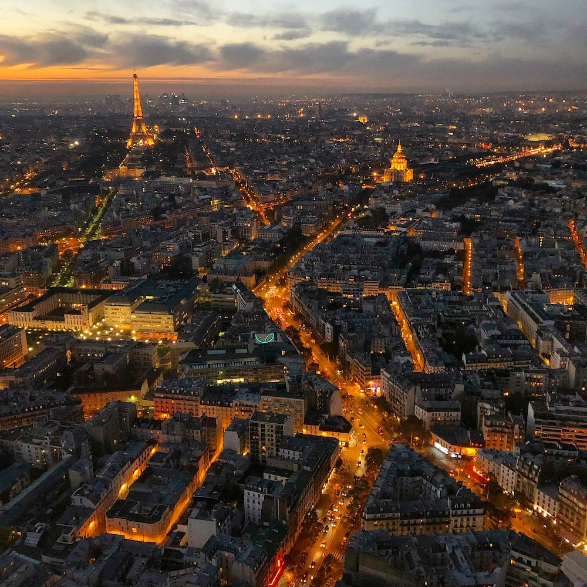
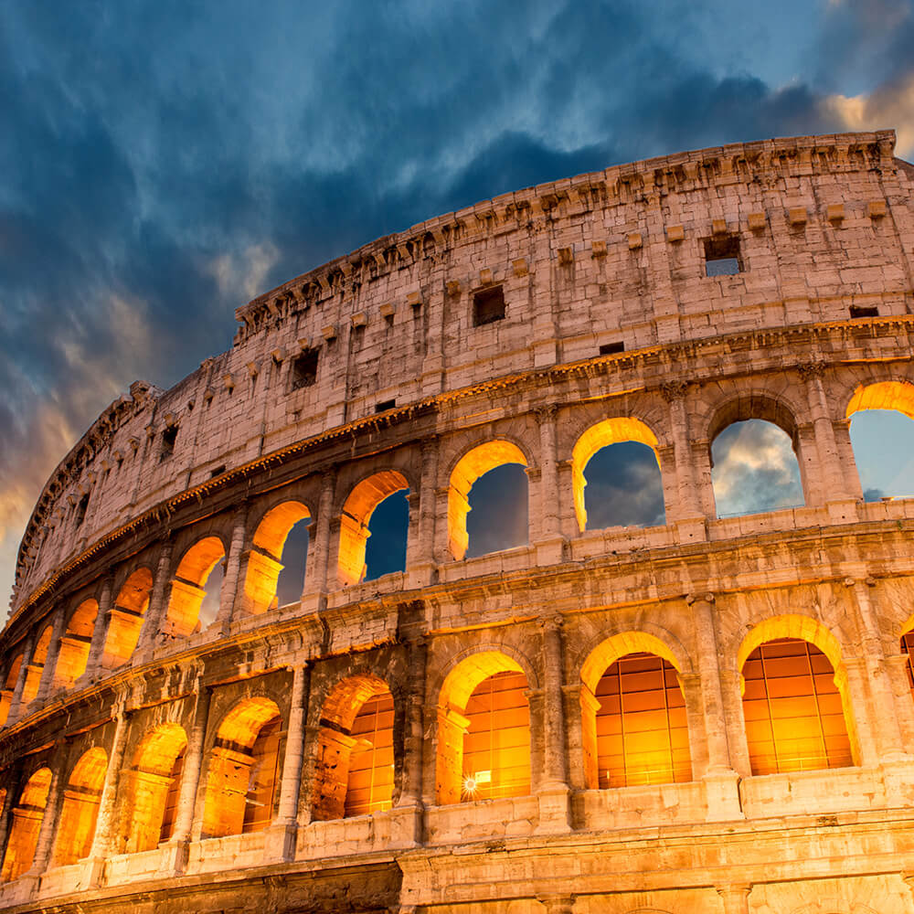
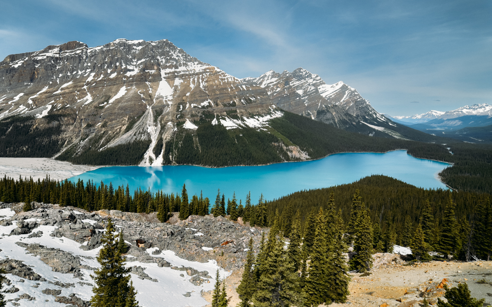
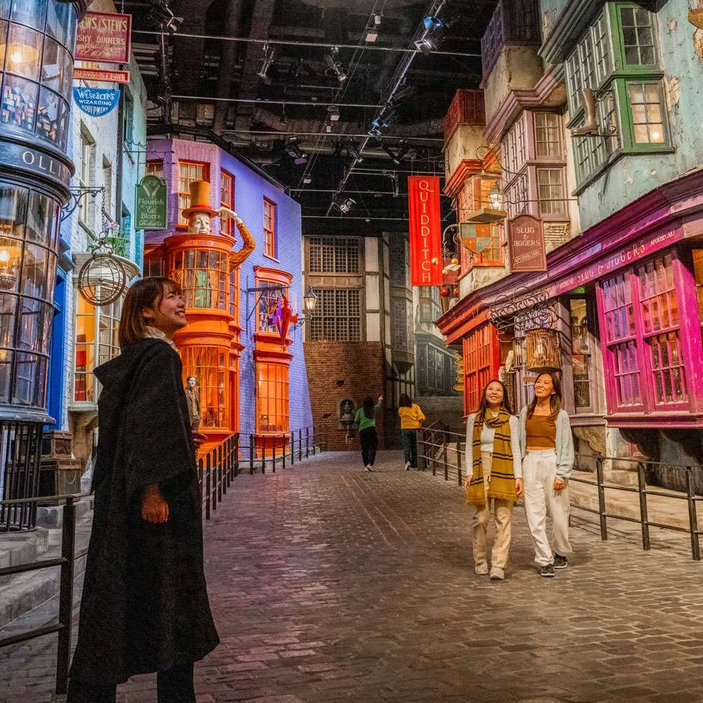

Conheça meu site principal, feito com carinho!
Nesta página, vou compartilhar meus destinos dos sonhos. De praias paradisíacas a cidades históricas, cada lugar tem algo único a oferecer.
Um lugar mágico onde a história encontra a elegância. Paris, a Cidade do Amor, é famosa por suas icônicas atrações, culinária requintada e cultura sofisticada. A atmosfera romântica e a beleza arquitetônica fazem dela um destino incomparável.
Ao visitar Paris, não deixe de explorar a majestosa Torre Eiffel, passear pelas margens do Rio Sena e degustar os deliciosos croissants e macarons nas charmosas cafeterias.

Descubra mais sobre Paris, a Cidade do Amor
Uma jornada no tempo espera por você nesta cidade histórica encantadora. Ruas de paralelepípedos, edifícios antigos e uma rica herança cultural aguardam os visitantes em Roma.
Explore museus fascinantes, como o Museu do Vaticano, desfrute da arquitetura magnífica do Coliseu e mergulhe na história que permeia cada canto desta cidade eterna.

Saiba mais sobre Roma, uma Viagem no Tempo
Se você é um amante da natureza e busca adrenalina, as Montanhas Rochosas no Canadá são o lugar certo para você. Trilhas desafiadoras, vistas panorâmicas de tirar o fôlego e a sensação de conquista esperam por você no topo das majestosas montanhas.
Prepare-se para uma jornada emocionante e repleta de paisagens deslumbrantes, onde lagos cristalinos refletem as altas picos cobertas de neve.

Explore mais sobre a Aventura nas Montanhas Rochosas
Conheça Tóquio, uma metrópole famosa por sua beleza arquitetônica, cultura vibrante e avanços tecnológicos. Passeie pelas ruas movimentadas, explore bairros únicos e maravilhe-se com a harmoniosa mistura de tradição e modernidade.
De templos ancestrais a arranha-céus futuristas, esta cidade oferece uma experiência verdadeiramente eletrizante e diversificada.

Descubra mais sobre Tóquio, a Cidade Eletrizante
Se você busca paz e tranquilidade, Santorini é o lugar ideal. Cabanas brancas e azuis, paisagens serenas e o azul intenso do mar Egeu fazem deste destino um refúgio perfeito para relaxar.
Desfrute de caminhadas pelas vielas charmosas, momentos relaxantes nas praias de areia vulcânica e a sensação de estar longe da agitação da vida cotidiana.